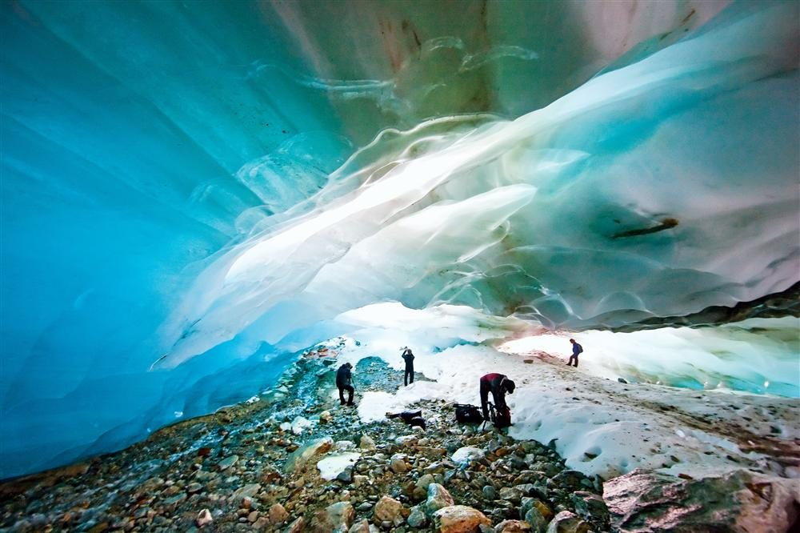
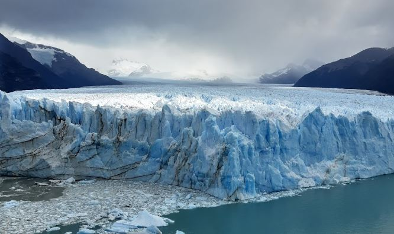
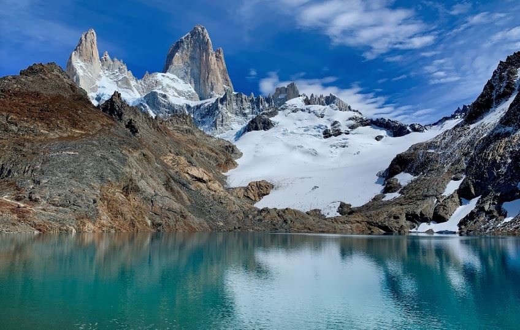
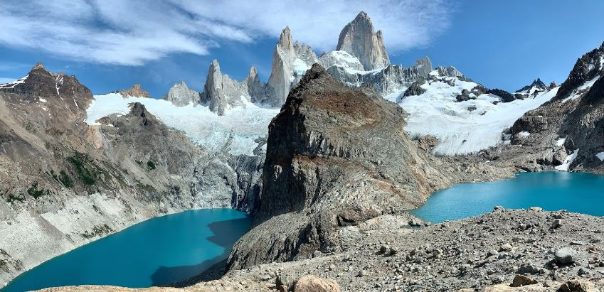
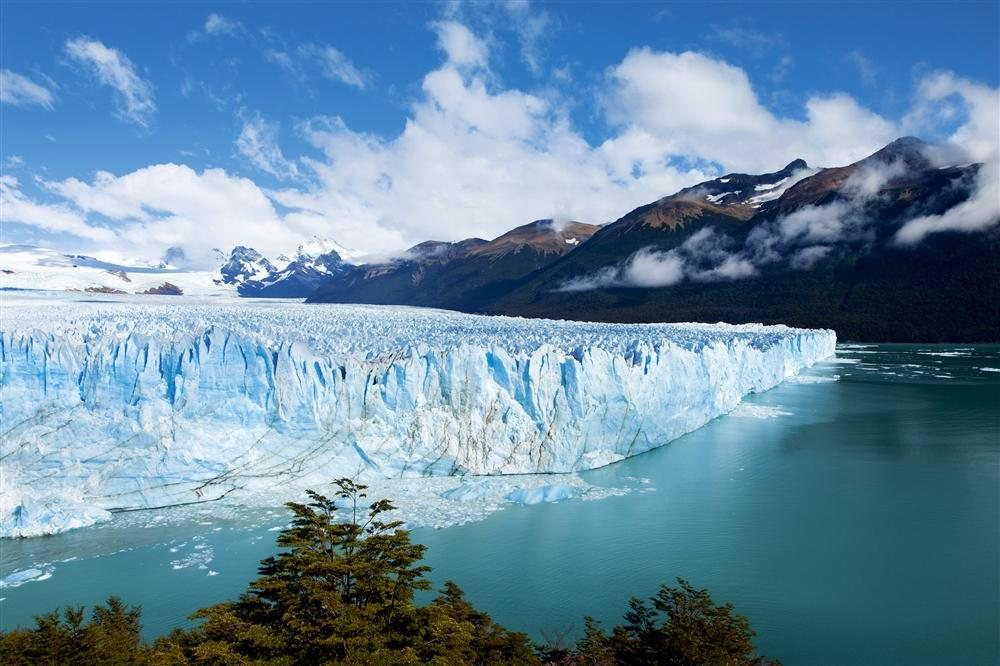

Una travesía entre glaciares y montes colosales hasta el extremo sur del continente americano.


Es una ciudad de la provincia de Santa Cruz, Argentina, reconocida mundialmente como la puerta de entrada al Parque Nacional Los Glaciares.

Ubicado dentro del Parque Nacional Los Glaciares en Santa Cruz, es mundialmente famoso como la "Capital Nacional del Trekking.

Es una de las montañas más icónicas y desafiantes de la Patagonia Argentina.

Es una de las maravillas naturales más impresionantes del mundo, ubicado en el Parque Nacional Los Glaciares, Santa Cruz.
"El Calafate es inolvidable. Ver el Glaciar Perito Moreno romperse y escuchar su rugido es mágico. Caminar las pasarelas, comer cordero patagónico y tomar whisky con hielo milenario. ¡Volveré!" 💙❄️🏔️
- Esther Navarro
¡Descubre la magia del hielo! 🧊✨
Vive una aventura única en La Patagonia. ¡Reserva tu lugar ahora y camina sobre glaciares milenarios! 🇦🇷✈️